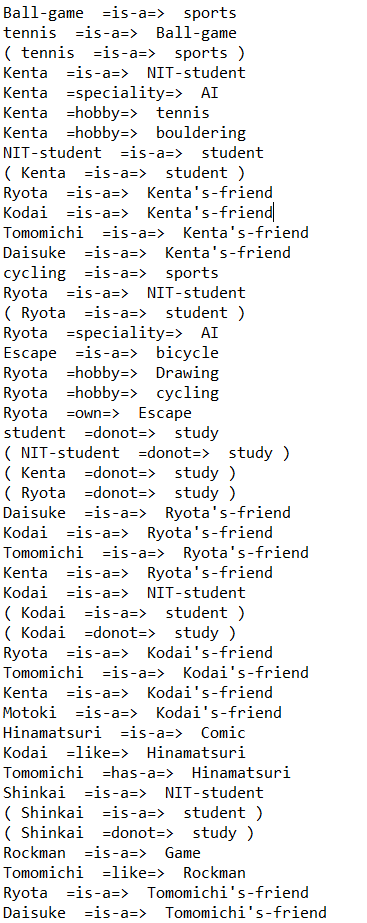
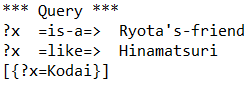

グループで話し合った結果，課題に加えて，以下の三点を独自仕様として組み込んだ．
1.に関して、"w is-a Tomomichi Kenta's-friend"を引数とするとファイルに"w"以降の文字が空白区切りで改行されて書き出される仕様とした。
2.に関しては指定された ファイルの中身をすべて削除する仕様である。
3.に関しては例として"q 2 is-a ?x Ryota's-friend hobby ?x tennis"というようにqのあとに質問文数、さらに続いて質問文を引数として与えるとその質問文の変数に当てはまるものを返す。
実装したプログラムはExample.javaを変更したものである。
インスタンスメソッドとして、write_text(),checkBeforeWritefile(),readt(),delete_text()を持つ。
write_text() メソッドは引数として実行時に入力された文をもち、それを空白区切りで入力するメソッドである。
checkBeforeWritefile() メソッドは引数としてFile型の変数fileをもち、その変数に格納されているfileが実際に存在するのかどうかを判定する。
readt() メソッドは指定されたファイルに書かれている内容を1文ずつ保存するメソッドである。
delete_text() メソッドは指定されたファイルの中身をすべて削除するメソッドである。
実装したプログラムに関して，先に挙げた write_text(),checkBeforeWritefile(),readt(),delete_text() メソッドとmain文における変更の説明を行う。
このプログラムにおける実装はすべて新海知道が実装した。
下記は write_text() メソッドの実装である．ここで特筆すべき点はファイルに書きこむところにおいて空白区切りで改行してファイルに書き込んでいる点である。
public static void write_text(String args[]){
try{
File file = new File("test.txt");
if (checkBeforeWritefile(file)){
FileWriter filewriter = new FileWriter(file, true);
filewriter.write("\r\n");
filewriter.write(args[1]);
filewriter.write("\r\n");
filewriter.write(args[2]);
filewriter.write("\r\n");
filewriter.write(args[3]);
filewriter.close();
}else{
System.out.println("ファイルに書き込めません");
}
}catch(IOException e){
System.out.println(e);
}
}
下記は checkBeforeWritefile() メソッドの実装である．これはファイルが存在して書き込みできるかどうかをFileクラスのメソッドexists()やcanWrite()で確認している。
private static boolean checkBeforeWritefile(File file){
if (file.exists()){
if (file.isFile() && file.canWrite()){
return true;
}
}
return false;
}
下記はreadt()メソッドの実装である。これはファイルに書かれているものを一行ずつStirng型配列に格納している。
File file = new File("test.txt");
BufferedReader br = new BufferedReader(new FileReader(file));
int k =0;
String str;
while((str = br.readLine()) != null){
str2[k]=str;
k++;
//System.out.println(str);
}
下記はdeleat_text()メソッドの実装である。これはファイルをnew FileWriter(file)で作り変えることで、ファイルすべてを削除している。
File file = new File("test.txt");
if (checkBeforeWritefile(file)){
FileWriter filewriter = new FileWriter(file);
filewriter.close();
下記はmain文の実装である。これは実行時に入力された引数の第一引数によってファイル書き込みや質問文に対する答えを返すといった複数の挙動が行える。
//ファイルに書き込む
if(args[0].equals("w")){
write_text(args);
//example [w friends Shinkai Suzuki]
//現在のファイルの登録されているセマンティックネットをすべて削除
}else if(args[0].equals("delete_all")){
delete_text();
//全部消えるので注意
}else if(args[0].equals("do")){
for(int i=0;i < n/3;i++){
sn.addLink(new Link(data[3*i],data[3*i+1],data[3*i+2],sn));
}
sn.printLinks(); //linkの表示
sn.printNodes(); //nodeの表示
ArrayList query = new ArrayList();
query.add(new Link("like","?y","Hinamatsuri"));
query.add(new Link("is-a","?y","NIT-student"));
//query.add(new Link("friends","?x","?y"));
sn.query(query);
//複数の質問文に対応
}else if(args[0].equals("q")){
//例）q 2 is-a ?x Ryota's-friend hobby ?x tennis
for(int i=0;i < n/3;i++){
sn.addLink(new Link(data[3*i],data[3*i+1],data[3*i+2],sn));
}
ArrayList query = new ArrayList();
int m = Integer.parseInt(args[1]);
for(int i=0;i < m;i++){
query.add(new Link(args[i*3+2],args[i*3+3],args[i*3+4]));
}
sn.query(query);
}
さらにその他の点、詳細は
こちら
実行例としてグループのセマンティックネットと、w,qを第一引数にした場合の挙動を示す。 まず最初にグループのセマンティックネットを示す。実行時のリンクを示す。

引数を"w is-a Tomomichi's-friend Kenta "とした場合の挙動
確かにファイルに空白区切りで改行されて書き出されている。
次に引数に"q 2 is-a ?x Ryota's-friend like ?x Hinamatsuri"と入力した場合の挙動を示す。
グループで話し合った結果，課題に加えて，以下の点を独自仕様として組み込んだ．
ここでグループ全員のフレームを示す。
トップフレームはhumanであり、スロットに身長と体重が存在する。そのhumanを継承したクラスフレームのmemberにおいて、スロットにどの課題を分担するかのtaskをもつ。
そのmemberフレームからグループ5人の名前のインスタンスフレーム(Kenta,Tomomichi,Kodai,Ryota,Daisuke)が存在する。
5人の名前のインスタンスフレームにはスロットは存在しないが、humanとmemberのスロットをもっているため、その5人のインスタンスフレームにおいて各スロット値を以下に示す。
課題5-2で作ったフレームを用いた質問応答システムを作成せよ．
例えば，課題5-1の担当者を質問すると答えられる，など．
なお，ユーザの質問は英語や日本語のような自然言語が望ましいが，難しければ課題4で\
扱ったような変数を含むパターン (クエリー) でも構わない．
グループで話し合った結果，課題に加えて，以下の点を独自仕様として組み込んだ．
実装したプログラムは主にFrame.java、また一部、AIDemonProcReadTest.java,AIFrame.javaを変更した。
クエリ－による質疑応答は清水涼太が、一部の自然言語による質疑応答は島野広大が実装した。
ここでは主な変更をしたFrame.javeにおける変更・追加点を挙げる。
クエリーにおける詳細はこちら
自然言語における詳細はこちら
下記はクエリ－の実装である。
引数として質問文を受けとっている。
今回の質問文では引数の2つ目となるスロット名には変数が入らないとした。
これはグループで話合った結果、スロットの中身は質問されることがあってもスロット自体の名前が聞かれることはまずないだろうという結論に至ったからである。
2~21行目でフレームとして登録されているフレーム名をkeylistへ、またそれぞれのフレームが持つスロットを継承先まで辿ってslotlistに格納する。
22行目から最後までで、質問文を空白区切りで3つ存在し、かつ2つ目の要素がスロット名として存在する場合はマッチングに入る。
マッチングでは引数の1つ目、3つ目のどちらに変数があるか、両方に変数があるのか、または変数がないのかでそれぞれ処理が分かれる。
void query(String[] string){
HashMap< String,AIFrame>temp = new HashMap< String,AIFrame>();
//Frameの名前とAIFrame自体を格納
temp = fs.solution();
//Frameの名前のArrayList
ArrayList< String> keylist = new ArrayList< String>(temp.keySet());
slotlist = new ArrayList< String>();
for(int i=0;i < keylist.size();i++){
AIFrame frame = (AIFrame)temp.get(keylist.get(i));
ArrayList< String>slot = new ArrayList< String>();
Iterator supers = frame.getSupers();
while(supers != null && supers.hasNext() == true){
frame = (AIFrame) supers.next();
slot = frame.solution();
for(int j=0; j < slot.size();j++){
if(!slotlist.contains(slot.get(j)))
slotlist.add(slot.get(j));
}
supers = frame.getSupers();
}
}
if(string.length == 3 && slotlist.contains(string[1])){
if( var(string[0]) && var(string[2])) varquery3(string);
else if( var(string[0]) && !var(string[2])) varquery1(string);
else if(!var(string[0]) && var(string[2])) varquery2(string);
else{
System.out.println(matching(string));
return;
}
}else{
System.out.println("error");
return;
}
}
下記は自然言語の実装である。
質問文1文をsに格納してそのsの中に決まったある言葉が含まれていた場合にその
言葉に対応する処理を行う。
メンバーそれぞれの名前と"体重"、"身長"、"課題"という言葉に反応する。
今回の仕様では決まった言葉が質問文に含まれていたときだけ反応するので、
質問文に、ある程度の自由さを実現できた。
｢大輔の身長はいくつですか？｣や｢大輔の身長は？｣など様々な表現に対応できた。
System.out.println("質門文を入力,終了:exit,クエリー:query");
BufferedReader br = new BufferedReader(new InputStreamReader(System.in));
String s = br.readLine();
if(s.indexOf("exit") != -1) System.exit(0);
if(s.indexOf("query") != -1)
{
n_or_q = true;
} //モードの切り替え
else{
String[] data = {"","",""};
//フレーム名の確保
HashMap< String,AIFrame>temp = new HashMap< String,AIFrame>();
temp = fs.solution();
ArrayList< String> keylist = new ArrayList< String>(temp.keySet());
//フレーム名を格納
for(int i = 0;i < keylist.size();i++){
if(s.indexOf(keylist.get(i)) != -1) data[0] = keylist.get(i);
}
if(s.indexOf("健太") != -1) data[0] ="Kenta";
if(s.indexOf("知道") != -1) data[0] ="Tomomichi";
if(s.indexOf("大輔") != -1) data[0] ="Daisuke";
if(s.indexOf("涼太") != -1) data[0] ="Ryota";
if(s.indexOf("広大") != -1) data[0] ="Kodai";
if(s.indexOf("人間") != -1 || s.indexOf("人類") != -1) data[0] ="human";
if(data[0] =="")data[0] = "?x";
//スロットの値を格納
//体重に関しての質問
if(s.indexOf("体重") != -1){
data[1] = "weight";
int index = s.indexOf("体重") + "体重".length();
if((s.length() - s.substring(0,index).length()) > 1){//「体重」の後に2文字続いているか
data[2] = s.substring(index, index +2);
if(!isNumber(data[2]))data[2] = "?体重";//体重の後ろの文字が2ケタの数字でないなら
}else data[2] = "?体重";
}
//身長に関しての質問
if(s.indexOf("身長") != -1){
data[1] = "height";
int index = s.indexOf("身長") + "身長".length();
if((s.length() - s.substring(0,index).length()) > 2){//「身長」の後に3文字続いているか
data[2] = s.substring(index, index +3);
if(!isNumber(data[2]))data[2] = "?身長";//身長の後ろの文字が2ケタの数字でないなら
}else data[2] = "?身長";
}
//担当課題に関しての質問
if(s.indexOf("課題") != -1 || s.indexOf("担当") != -1){
data[1] = "task";
int index = s.indexOf("課題") + "課題".length();
if((s.length() - s.substring(0,index).length()) > 2){//「課題」の後に3文字続いているか
data[2] = s.substring(index, index +3);
if(!isNumber(data[2].substring(0,1)) || !isNumber(data[2].substring(3-1)))data[2] = "?課題";////課題の後ろの文字が○-○でないなら
}else data[2] = "?課題";
}
new Frame().query(data);
}
}
}
クエリに対する挙動をのせる
変数を2つにするとすべて列挙する仕様にしている。
質問に変数がない場合は"true"or"false"を返す。
自然言語に対する挙動を示す。
列挙するときは列挙したいスロット名(身長、課題等)を入力する。
グループでの進捗管理や成果物共有などについて，工夫した点や使ったツールについて，グループ作成書類fで考察せよ。
(ヒント) LINE等でも良いが，以下のようなツールやグループウェアも積極的に利用するとよい。
グループでの成果物共有としてGithubのツールを使用した。
GithubでOrganizationを作ってこれを演習のグループとした。
リポジトリを作成して、commitでファイルやディレクトリの追加・変更とコメントを残すことで変更履歴の管理が容易でできるようになった。
Githubでは、既存のファイルを更新したときにどの部分が変更されたかが視覚的に理解できるため、作業の効率化がはかれる。
既にアップロードされているファイルの更新や更新に関してのコメントをつけることはできたが、文字コードを統一できずに文字化けしてしまったり、ソースのどこを更新したのかコメントの義務化をしていないためにどこを更新したのか探すのに時間がかかってしまった。
次回からは、最初にルールを決めてグループでそのルールを遵守する必要がある。
グループ全体として、体重に関するスロットに対する操作が実装できなかった。
クエリ、自然言語どちらにおいても体重単独の質問に対して答えを返すことができなかった。
これはデモン処理に対してグループ全体で理解が不足していたためである。
しかし、自然言語対応の実装やFrame.javaのバグを発見し修正することができた。
初めてのグループでの活動で、全員がさわったことのないgitを扱うことを決めたので、gitを学ぶことからはじまって苦労しました。
しかし今後の活動に役に立つgitを学ぶことができたのでメンバー全員にとって為になったと思います。